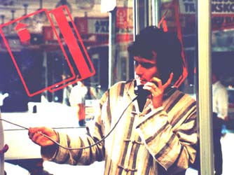

Streamlining the corp Streamlining the corp
In surveilling the endless maze of a modern corporate workforce, the executive in command has quite a few tools in his hand to effectivize and streamline the organization. Spreadsheets are passé, today's leader confines in his array of trusty cellular automata powered workforce-honing, efficiency-increasing programs.
The boss hiding behind his big oak desk high up in the skyscraper building is a remnant of the past. Today's exec runs his organization from wherever he happens to be at the moment. Some days he telecommutes from the central station, at other times he simply jumps the nearest bus and does his work from the back seat of bus 23 all day. His freedom of workplace can be credited to his trusty Palm Pilot and cellular phone.

Bratizlav Mick, that big, red-bearded pirate of a corporate leader spent his prime years running his corporation from a small Zodiac boat somewhere in the Persian Gulf. The threats to his life and the hazards and stress of running his firm soon became too much even for his valiant soul. He decided to hit the road, and take his corporation with him.
Every morning at 7, after drinking a sip from the reverse osmosis driven water purifier he downloads today's decision lists and starts his work; at 10AM he starts downloading realtime video feeds from his corp's security camera network, and in the glitches and static interference that plagues the images he thinks he sometimes glimpses God.
Rusty Jot, that fat zulu, runs his illegit slave trade by selling off neighbouring tribes (and sometimes when stock is short; his own people). His main customers: multinationals in dire need of cheap labour. He began to doubt that his position at the top was as secure and safe as he had previously thought, and started to plan his technocratical retreat.
The clone arrived late one night; the big slaveship came in to the port and unloaded only one single large crate that was transported by silent eunuchs to the corporate campus, they left the crate to be opened by the boss himself.
Later, under the moonless night, a fast trike sped over the dusty roads, towards an eremit's cave somewhere near Lake Tahunta district, a remote part of the land. The only thing that tells the visitor that there's more to the old caveman than what could be expected is the small solar cell recharge unit that is placed outside the cave, but that is only taken as a proof of his eccentricity - could he possibly need it?
Late at night, local people say, the cave-eremit is talking to himself in his mad reveries, the talk sounds like business deals are being set, goods are being shipped, slaves are being sold - somewhere in the mad mind of the one that gave up on society such a long time ago.
by Joel Westerberg